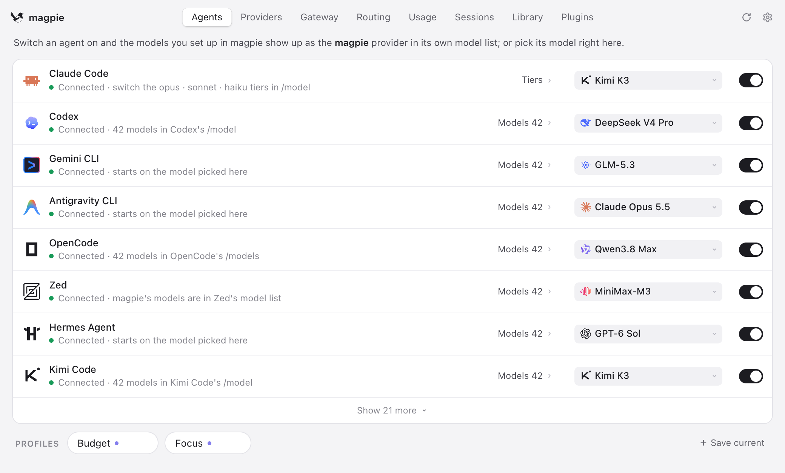

Magpie
A free app that lets you pick any AI model for any coding agent from one menu bar - no config files, no vendor lock-in.
Install Magpie once, and every coding agent on your computer (Claude Code, Codex, Gemini and dozens more) can use any model from any provider, switched with one click.

How does it work?
You run several AI coding agents, each locked to one model or vendor. Switching means editing config files in different formats, juggling separate keys, and losing track of what you spend.
You want Claude Code to use a cheaper model for small tasks, and Codex to try a different vendor - but each has its own config file in a different format.
You click the Magpie icon in your menu bar (or open the terminal, web, or full-window interface).
Click the menu bar icon and see every coding agent installed on your machine, each with its current model shown.
Your AI provider keys, subscription logins, or local model servers - added once and shared across all agents.
Add your Anthropic key plus your OpenAI key, or sign in with your Claude Pro subscription and your ChatGPT Plus account.
A local gateway translates between API formats, routes requests to the model you chose, and tracks what each agent uses.
- Pick a model for each agent from one searchable list - Magpie writes the change into that agent's own config file, preserving comments and formatting
- The gateway (running on your computer at port 3425) translates between OpenAI, Anthropic and Gemini API formats, so any agent can talk to any provider
- If a key or subscription runs out, routing groups automatically switch to the next one - the agent never sees the error
Set Claude Code to use DeepSeek for drafts and Codex to use Claude via your Pro subscription - both changes take one click each.
Every agent uses the model you chose, from one dashboard, with one cost view.
- One-click model switchingChange Claude Code's model to DeepSeek, or Codex's to Claude, without touching a config file
- Shared subscriptionsYour Claude Pro or ChatGPT Plus login becomes a provider for other agents that do not have their own
- Cost and usage trackingSee how much each agent uses and what it costs in dollars - broken down by agent, model and conversation
What changes for me?
Without it
- Switching an agent's model means finding its config file, looking up the right format, and editing it by hand - different for each tool.
- Your Claude subscription only works in Claude Code, your ChatGPT plan only in Codex, and you have no single view of what you spend.
With it
- One menu bar shows every agent and every model. Click to switch, save a profile to change them all at once.
- Any subscription or key works in any agent - Claude Code can use your OpenAI key, Codex can use your Claude plan - and you see total cost in one place.
How hard is it to try?
Effort
- Download Magpie for your computer (Mac, Windows or Linux) - about 15-25 MB. Or install from the terminal:
curl -fsSL https://usemagpie.ai/install.sh | sh. - Add a provider (pick a preset like Anthropic or OpenAI and paste your key, or sign in with a Claude or ChatGPT subscription).
- Switch to the Agents tab, find a coding agent you already have, and change its model. Start a new session in that agent and check that it uses the new model.
What it takes on your computer
- Space on disk
- About 15-25 MB (the Mac Apple Silicon DMG is 22.8 MB, the Intel DMG is 25.2 MB). Terminal-only build is about 7 MB.
- Memory while it runs
- No data found. The gateway runs on your computer at port 3425. Plugin runtime downloads Bun the first time a plugin needs it.
- Runs on
- Mac (macOS 11+, Apple Silicon and Intel), Windows (10+, x64 and ARM), Linux (x86-64 and ARM64, requires GTK 3 and WebKitGTK 4.1). Also runs in Docker and Termux. Menu bar app, full window, terminal interface, web interface, and command line.
Paste this into Claude Code. It runs your safety scan first, then a 10-minute test.
/skillspector https://github.com/yetone/magpie If that scan passes: download Magpie from https://usemagpie.ai, add a provider with an API key, then switch Claude Code's model to a different vendor. Verify it works by starting a new Claude Code session. 10 minutes max.
Should I?
Great if you...
- You run two or more coding agents (Claude Code, Codex, Gemini CLI, etc.) and want to try different models without editing config files
- You pay for a Claude or ChatGPT subscription and want other agents to use it too, with automatic failover when a quota runs out
Skip it if...
- You use one agent with one provider - a reviewer calls Magpie 'a nice menu-bar toy you do not need' in that case
- You are concerned about routing paid subscriptions through a third-party tool - the README warns that Google may suspend accounts used outside their own apps
Instead, you could look at
- LiteLLMAn open-source proxy that translates between AI APIs. Developer-focused (runs as a server you set up), not a desktop app.
- Manual config editingFree and no extra software. But you edit each agent's config file by hand, in its own format, and track costs yourself.
Is it safe?
- Security advisories: 0GitHub's advisory list, checked Oct 16
- Searches for CVEs, vulnerabilities, malware and scams20 results read, including the national CVE database: nothing found
- Are the stars earned?14K stars, 139 contributors, 3.8K commits. findarepo: looks organic (100/100)
Watch out for
- Routing subscriptions may break vendor terms. The README warns that Google may suspend accounts used outside Antigravity. The Claude bridge spawns a process per request and depends on Claude Code's internal flags staying stable. Check each vendor's terms before routing their subscription through Magpie.
- Does not accept outside pull requests. Only maintainers can open PRs. Bug fixes depend on one developer (yetone, also known for avante.nvim). Response times on issues have been fast (often under a day), but it is a single-maintainer project.
- Very rapid release pace. Over 1,200 releases in 23 days. One reviewer noted a regression (issue #129) that was fixed within a day. Behavior can change quickly between versions.
- Sends a daily telemetry ping by default. A released build sends a random ID, its version and system, and which agents, providers and models are in use. No prompts, keys or usage numbers are included. Opt out in Settings or with DO_NOT_TRACK=1.
Who's using it, and for what?
Magpie was created on September 23, 2026. It is 23 days old and growing fast, but independent long-term user reports are still scarce.
We couldn't find anyone describing real use of it yet. That's normal for a brand-new repo, and it's worth knowing.
Who's talking about it
Sources
- Magpie on GitHub (README, features, requirements), Oct 16
- Magpie website and downloads, Oct 16
- Magpie releases (v0.1.1270, installer sizes), Oct 16
- Magpie review (andrew.ooo, independent review), Sep 28
- AlphaSignal: Magpie Gives Developers One Gateway to Rule 20 Coding Agents, Sep 29
- PyShine: Magpie source tour, Sep 30
- findarepo: yetone/magpie (star check), Oct 16
- Trendshift: yetone/magpie, Oct 16